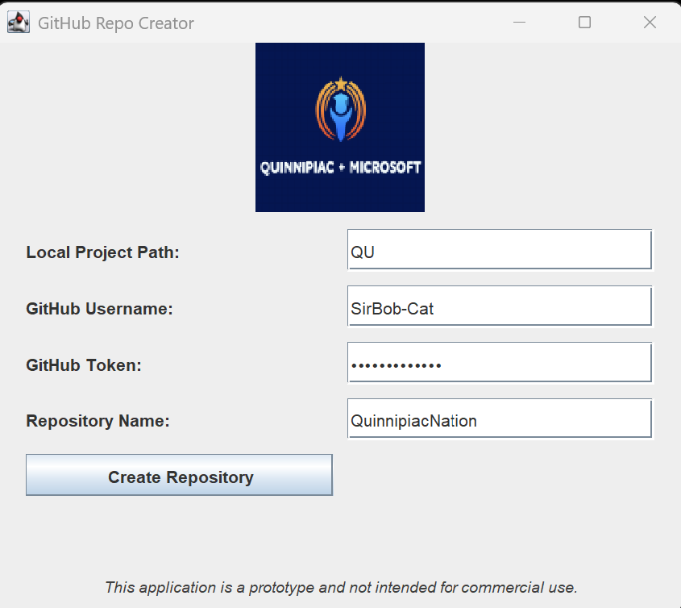

This Java-based application allows users to convert a local project into a GitHub repository. It handles Git initialization, file generation, remote setup, and pushes the first commit — all through a modern GUI.
Features
Initialize a Git repository from a project path
Automatically generate .gitignore and README.md
Create and push the initial commit to GitHub
Uses GitHub API to configure remote repository settings
Returns the public URL of the created repository
GUI Preview

How to Use
Download and run the application
Enter your GitHub credentials (never share your token)
Select your project folder
Submit the form to create and push your GitHub repository